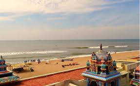

Ashtalakshmi Temple, a delightful and soft coloured temple complex, is located in Besant Nagar, in the South Indian state of Chennai. The temple complex is built a few meters away from the Besant beach on the coast of the gorgeous Bay of Bengal. Ashtalakshmi, the Goddess of Wealth and Knowledge resides here and blesses everyone who visits the temple to offer their prayers with a clean soul. Soak in the divine ambience of the temple on the scenic coast of Bay of Bengal and observe the colourful and intricate tiers on the shrines. The serenity is unquestionable and sure to calm jittery nerves of the pilgrims and devotees. Apart from locals, you can also witness tourists flocking in from different parts of the world to enjoy the mesmerizing beauty of the temple.
The Ashtalakshmi Temple complex is built to worship eight avatars of Goddess Lakshmi namely Wealth, Success, Prosperity, Bravery, Courage, Knowledge, Food and Offspring. It was built when Sri Maha Periyaval or the Sage of Kanchi Mutt, Sri Chandrasekara Saraswati Swamigal had wished for it to be constructed. The followers willingly agreed and laid the foundation with utmost devotion. Goddess Lakshmi is known for granting Ashtama Siddhi and Astha Iswaryam which mean eightfold achievements and wealth respectively. The continuous sound of the ocean waves echo in the temple complex and instantly inculcate a feeling of peace and composure in the devotees bringing them one more step closer to the spiritual world. This place of worship is so magnificent that one has to visit to experience it. The grandiosity of the place can be estimated from the fact that nearly 7 million rupees were spent on the renovation of the temple and over 1.6 million rupees on conducting a religiously important Hindu ceremony named, Jeernotharana Ashtabandana Mahakumbhabhishekam.
The Ashtalakshmi temple is situated at a distance of 10 km from central Chennai. The most optimal way to reach the temple is through a taxi which charges around INR 100 for 4 km. Private and Tourist vehicles can also be driven to the beautiful temple complex.
